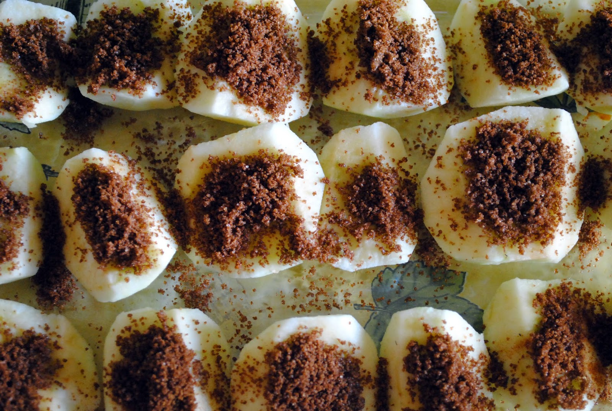

Minu lemmikretsept
Ahjuõunad

Materjalid
| Koostisosad |
Kogus |
| ahjuõunad |
5tk |
| pruun suhkur |
2spl |
| kaneelipulber |
1spl |
| Toiduõli |
2spl |
- Koori õunad, lõika pooleks ning seejärel veel pooleks. Eemalda noaga südamikud.
- Määri ahjuvorm kergelt õliga kokku (mina kasutan selleks tavaliselt salvrätti) ning lao õunatükid vormi.
- Sega kausikeses kokku suhkur ja kaneel ning aseta lusikaga valminud segu igale õunale.
- Lükka vorm kuuma ahju ning küpseta õunakesi, kuni need on pehmed ja suhkur sulanud, ligikaudu 20 minutit ja 200C ahjus.